Koshino house, Ashiya, Hyogo, Japan, 1981
Tadao Ando
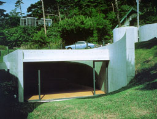
Houses of the Century
Anatxu Zabalbeascoa |
Tadao Ando combines lines, simple forms, new
industrial materials with the traditional Japanese style for
building houses and landscapes. With concrete and abstract forms
he gives form to space. The Koshino house is composed of two
parallel concrete boxes which are sunk into a slope of the national
park. A central courtyard provides for ventilation and light.
The interior offers sinuous visual games by shadows and light.
On the right picture you see a concrete wall uncoupled from the
roof which causes light brushing along the wall.
|
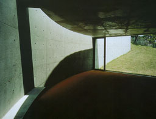 |
University of Aveiro, Department of Mechanical Engineering, Aveiro,
Portugal, 1992-1996
Adalberto Dias
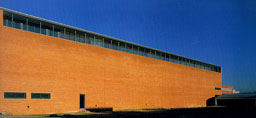
GA Document 50
A.D.A EDITA Tokyo |
In this design both large spaces for laboratories
and of heavy machinery and small spaces were require with a great
flexibility. The larger areas are orientated north by means a
of totally glass facade where the sun doesn't penetrate easily.
The south-side is totally closed except for the windows near
the roof which illuminate the atrium with corridors and stairs
as can be seen on the photographs. Between corridors and the
larger areas the smaller places are situated. |
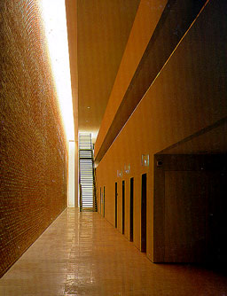
|
|
Domus, La Caruña, Spain, 1995
Arata Isozaki and César Portela
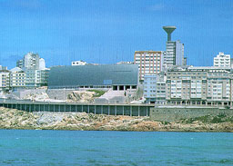
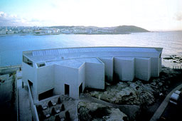
The Architecture of Museums
Francisco Asensio Cerver |
Domus is an interactive museum whose purpose
is to give a better understanding of the human body. The building
is situated on the top of a cliff along the sea. The meaning
was to give it a visual connection with the Herculas lighthouse.
From this the basis for the construction was born: a very simple
and forceful form which can be seen from a distance. Also the
climate, strong winds and aggressive waves, made the architect
chose for a strong and solid form almost without any windows
as you can see on the left photographs. Daylight is coming from
above into the open exhibition space through a very large window
in the roof. The backside of the building consists of pieces
of wall standing in different directions so the shade of the
sun gives a very strong and changing contrast to the building
as can be seen on the right picture. On the other picture on
the right you can see daylight coming from above into the exhibition
space. The window is placed along the curved granite wall so
the daylight brushes past the inside of the wall. |
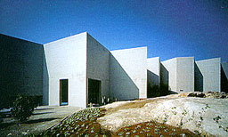
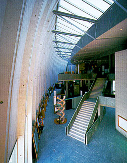 |
|
Arken Museum of Modern Art, Arken, Denmark, 1993-1996
Søren Robert Lund
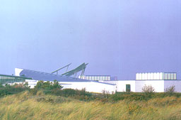
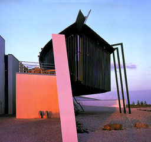
The Architecture of Museums
Francisco Asensio Cerver |
With this museum the architect has tried to combine
art with architecture to get interesting relationships between
the art and the spaces. Robert Lund gives each part of the building
an own identity and a domestic comfort by using texture, light
and colours. Each space is given a proportion depending on its
purpose, light and acoustics. The building is build out of many
different volumes and dynamic constructions. A shipwreck was
the starting point which has been translated into a building
integrated into the landscape consisting of sand dunes and vegetation.
On the right photograph one of the main exhibition halls with
a tapered form can be seen. Daylight brushes past the wall to
light up the room. |
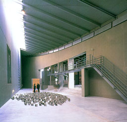
|
Marble Arch, Long Island, United States
Steven Haas
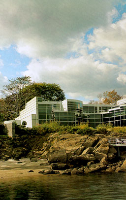
Houses by the sea
Telleri |
Marble Arch is built on the rocky coast on
the east of New York City, overlooking a small bay. The house
has a sinuous glazed facade which curves along the coast. According
the great number of windows providing for direct and indirect
light, the grey granite walls and the darker grey floors, the
interior gets a very serene character. The warm colour of the
mahogany panelling contradicts this serene feeling. On the right
picture you see the swimming pool lit up by a subtle combination
of daylight and artificial light. The difference in colour between
daylight and the used artificial light is easy to be seen. |
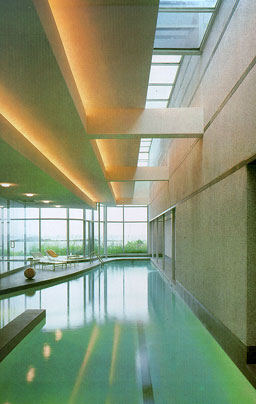
|
|
|
|
|
|
|
|
|